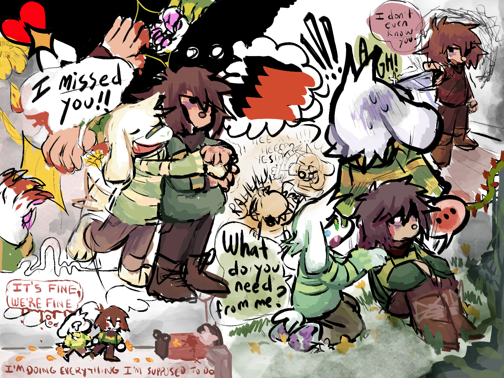
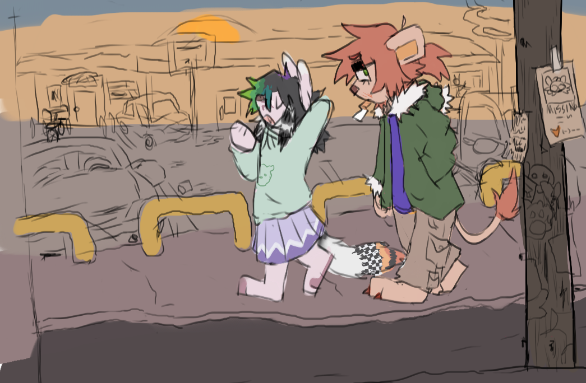
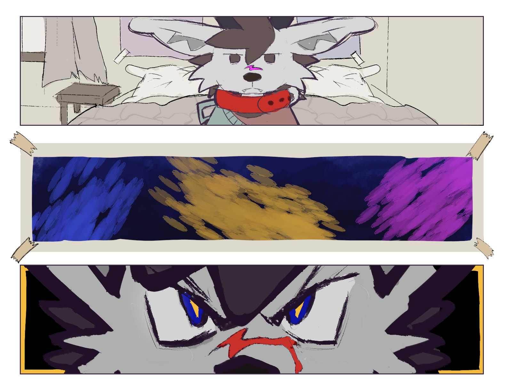
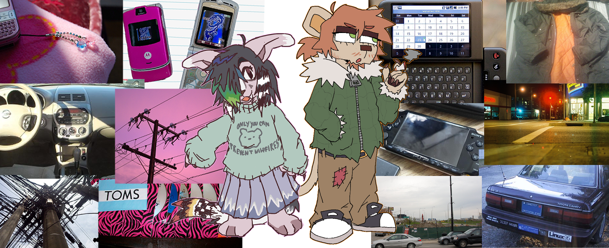
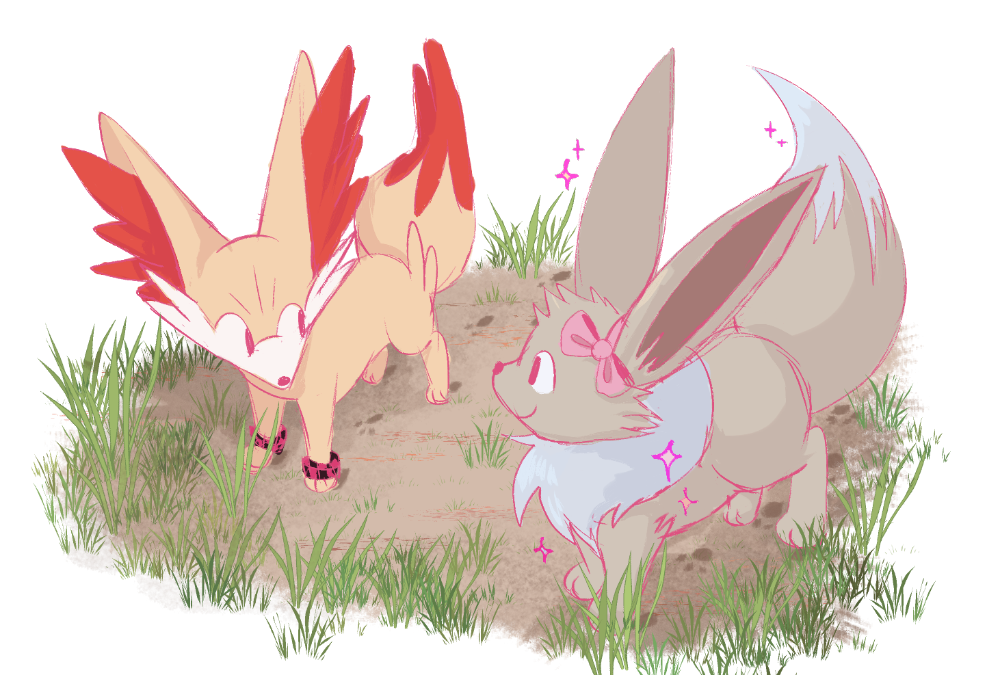
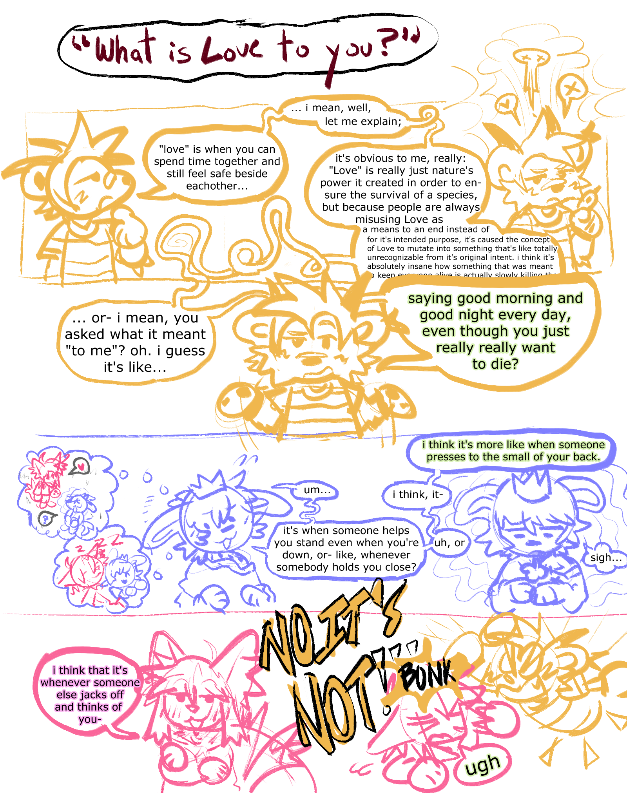
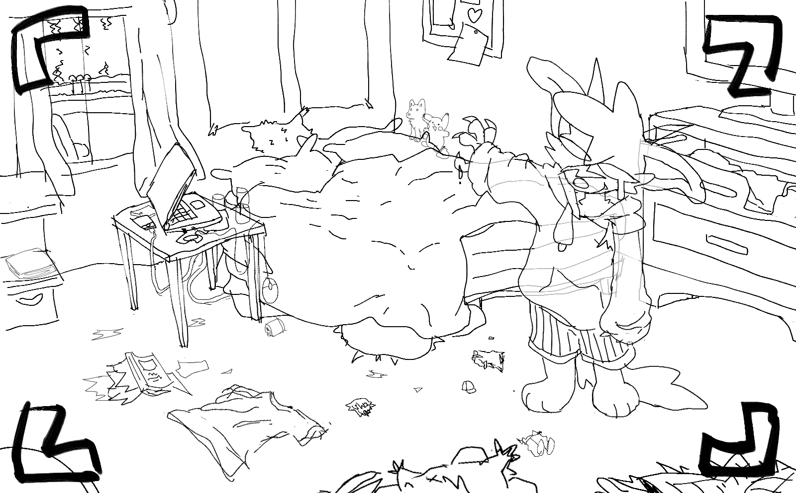
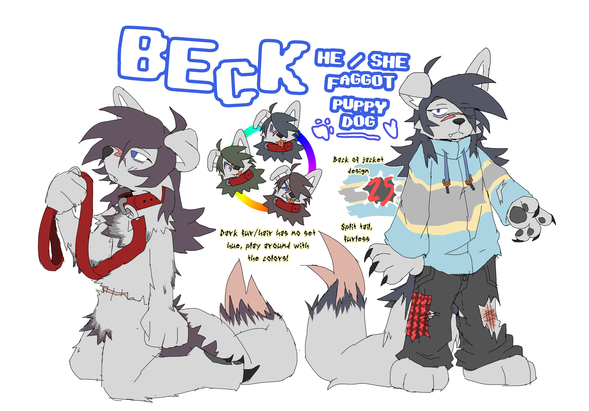

whoa, long time no see! i left off on a super high note here, didn't i? that's really funny, but i'm really glad that i wrote that entry, it makes me happy. where on earth do i even start writing something like this? the past few months have been unbearably, indescribably difficult - but also filled with some of the most wonderful events and developments of my life. it's been tears of happiness and a whole whole lot worse, but i'm alive!
since i last wrote about my trip with coda, i'd like to say it went absolutely fucking amazing and was one of the best weeks of my entire life, and i've never been more thankful. they're such a wonderful friend and i'm so thankful they let me in to stay with them and have so much fun, seriously... i'd like to make a page dedicated just to talking about that trip, but i wanted to say it went well. i'll have uploaded some of my favorite photos on the sidebar here, so go check them out if you wanna see what we were up to!
something else that's happened since i last wrote is that i started "dating" my mate bluejay, at some ambiguous time... he's so amazing and i'm thankful for her every day. again, i'd like to make an entire page just talking about this sort of thing, and my recent trip to her house, but this is me formally "introducing him" by writing about it... if you're reading this, i looove you! <3
the past few months have been so much despite all the positives, it's been absolute hell on the dissociative side of things. as a result, my motivation to work on passion projects and art in general kind of tanked to an absolute low, and since my energy was limited, i only put effort into creative projects when i absolutely needed it for stress relief. it also varied extremely between parts, which complicated things. so, basically - the long gap was because i was undergoing insurmountable stress. and now i'm extremely relieved to be coding again, and very excited to work! i've found so many things i want to write about since i last did!
most of my finished art from the last few months has been from fen lately, working on their new ocs! they want to repurpose their journal to be a whole "side of the site" just for them, so i'll leave it to them to write about them and (hopefully remember to) link back to that here later. it's been very fun to have ocs again for the first time in a long time.
here's a few other things i've done in the past... god, what, 5 months' time:








despite all the pain that caused a lot of it, this is the first time in years i've actually felt satisfied with where i am in regards to my art, so i'm pretty pleased looking at this lol. my dragon hoard... anyway, i can't think of too much more to write about right now. i'm excited to work on new pages, and i have a lot of ideas, and am excited to do some general site reworking. nice to talk to you guys again!
maybe someday i'll add ayano's neocities comments widget to these entries, it might be fun... i haven't looked into it yet though. food for thought ^^
4/20/24 edit: i did that!